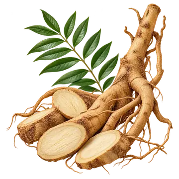
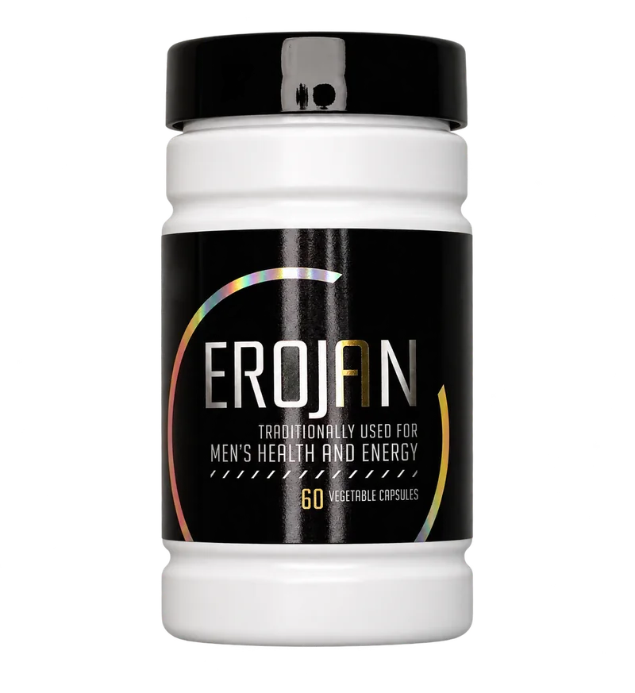
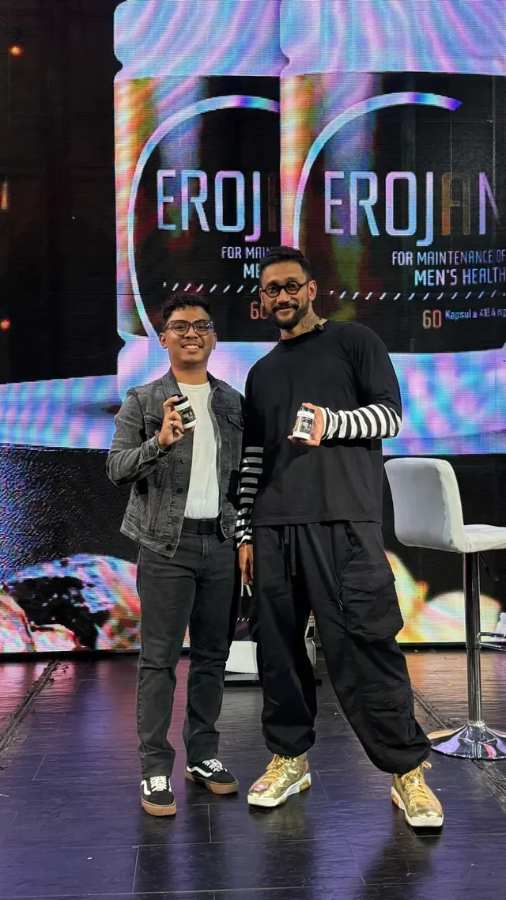
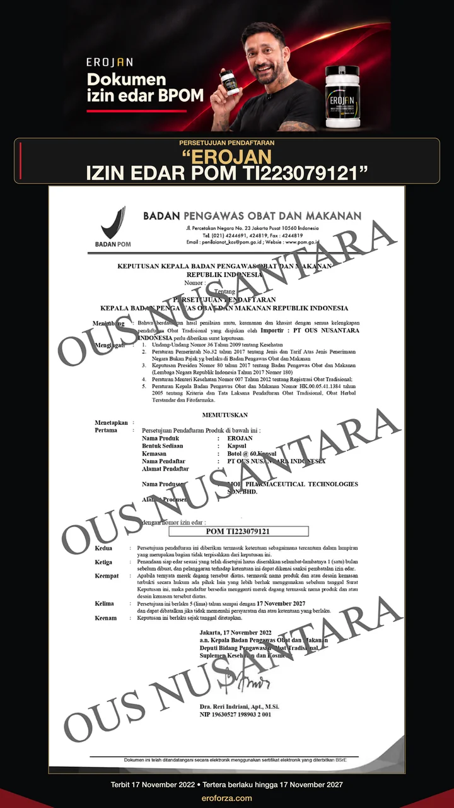
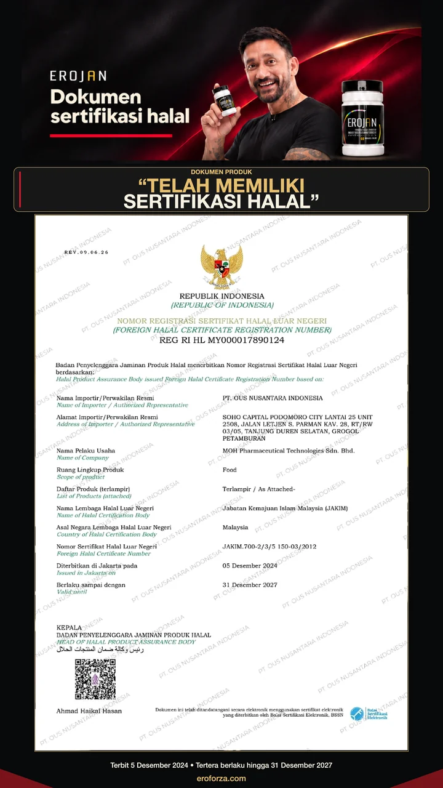
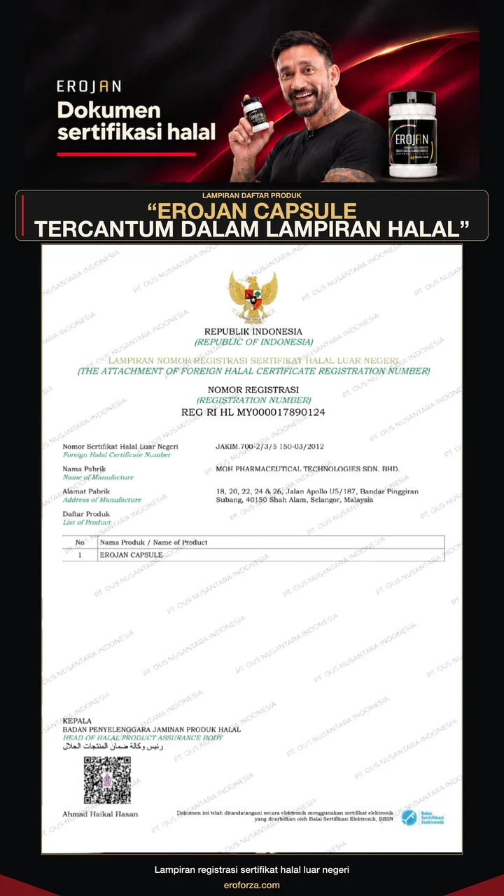
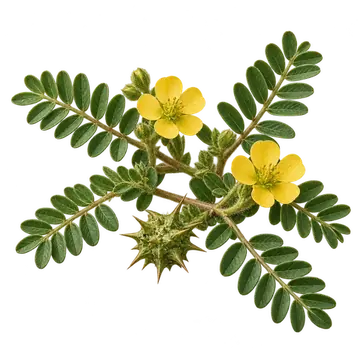

Tongkat Ali
Eurycoma Longifolia Radix Extract
Tempat yang tepat untuk beli EROJAN
EROJAN BY WELLOUS · STAMINA PRIA
Membantu memelihara stamina pria. Kenali EROJAN, suplemen dengan enam bahan botani dalam kemasan 60 kapsul.
Pilih untuk lompat langsung
Chat dilayani 24 jam · WhatsApp 0896-8211-0081 · kenali EROJAN


Tanya dulu, putuskan kemudian. Semua ini bisa Anda cek sendiri sebelum membayar.
Data registrasi dan dokumen resmi EROJAN. Periksa sendiri nomornya di portal BPOM dan BPJPH sebelum memutuskan.



Dokumen ditampilkan seperti yang diterima dari pemilik. Data tabel mengikuti catatan pemeriksaan portal BPOM tanggal 1 November 2026. Periksa status terbaru di kanal resmi BPOM dan BPJPH, lalu cocokkan dengan label produk yang diterima.
Video Tora Sudiro tentang EROJAN · sekitar 52 detik
TESTIMONI
Tora Sudiro menceritakan pengalamannya menggunakan EROJAN. Tonton videonya, lalu tanyakan informasi produk yang Anda perlukan kepada kami.
Pengalaman pribadi dalam video bukan jaminan hasil yang sama pada setiap orang.
52 detik · dengan audioTanya kami soal EROJANKOMPOSISI EROJAN
Kenali bahan yang tercantum dalam produk. Cocokkan komposisi ini dengan label Indonesia pada kemasan.

Eurycoma Longifolia Radix Extract
Lepidium Meyenii Radix Ekstrak
Butea Superba Radix Ekstrak

Tribulus Terestris Fructus Ekstrak
Cuscuta Chinensis Herba Ekstrak
Epimedium Brevicornum Folium Ekstrak
Gambar merupakan ilustrasi bahan. Rujukan: Cek BPOM dan informasi produk Wellous.
INFORMASI & PEMESANAN
Kenali produknya, tanyakan yang Anda perlukan, lalu pastikan rincian pesanan bersama kami.
Stok dan total pembayaran dikonfirmasi sebelum pembayaran. Ongkir gratis.
SEBELUM MEMUTUSKAN
Informasi yang membantu Anda mempelajari produk dan memeriksa data kemasannya.
Cocokkan data dengan label produk yang diterima. Informasi registrasi mengacu pada catatan pemeriksaan 1 November 2026; periksa status terbaru di kanal resmi.
Hubungi kami melalui WhatsApp untuk informasi harga dan stok. Ongkir gratis, pembayaran bisa di tempat (COD), dan paket bisa dicek dulu sebelum dibayar. Pastikan rincian dan total pembayaran disepakati secara tertulis sebelum membayar. Baca panduan pemesanan dan ketentuan lengkap.
Periksa kemasan, segel, label, nomor izin edar, komposisi, kode produksi, serta kedaluwarsa. Cocokkan identitas produk dengan kanal resmi dan minta rincian pesanan tertulis dari kami.
EROJAN merupakan suplemen dengan kegunaan membantu memelihara stamina pria. Ikuti aturan pakai, peringatan, dan perhatian pada label Indonesia.
Ikuti aturan pakai pada label Indonesia. Jangan melebihi aturan pakai. Jika memiliki kondisi medis atau sedang menggunakan obat lain, tanyakan kepada dokter atau apoteker sebelum menggunakan produk.
Bukti spesifik produk dalam materi yang diperiksa belum cukup untuk menjanjikan perbaikan testosteron, peningkatan fokus, atau percepatan pemulihan tubuh. Keluhan yang menetap perlu dinilai oleh tenaga kesehatan.